Alessandro Acuna
Mechanical Design Engineer
Mechanical design engineer with experience in the design and FEM analysis of structural components for the aerospace and industrial sectors. Specialised in optimising designs for manufacturing, reducing costs and improving performance.
Availability
Available immediately.
Europe · DE IT ES UK
Key competencies
Experience

AIRBUS - Structural Design & Analysis Engineer Madrid, Spain
- Management of non-conformities and customer concessions, in order to define repairs to ensure airworthiness.
- Designing structural repairs by checking geometries, tolerances and interferences while considering hydraulic and mechanical systems and applying design and fatigue principles in CATIA V5.
- Creation of 3D models and 2D drawings of structural components in CATIA V5.
- Structural verification of repairs using FEM analysis, development of FEM models on HyperWorks for pre and post processing with Nastran as the solver.
- Development of FEM models on Abaqus to study the propagation of delamination in detail in structures affected by different types of defects.
- Collaboration with the Quality and Production departments to ensure optimal repairs without compromising the production line.
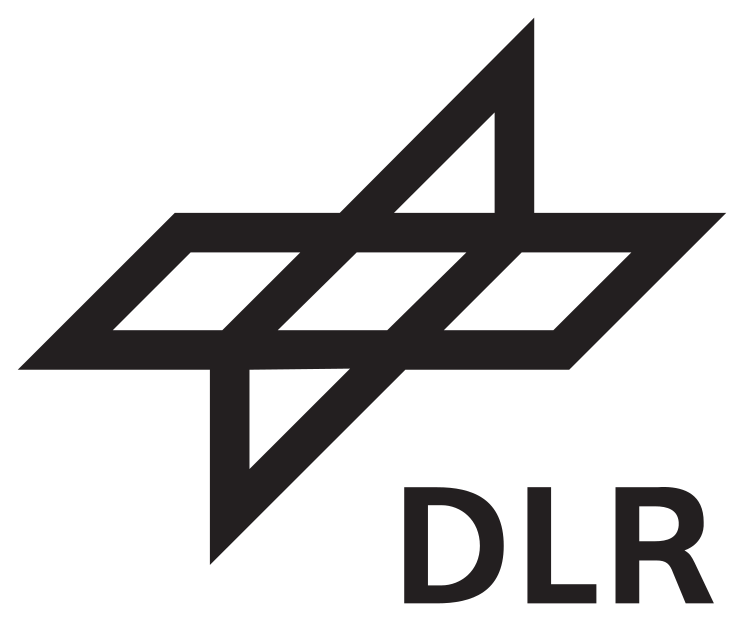
DLR – German Aerospace Center - R&D Engineer – Master Thesis Stuttgart, Germany
- Compression (out of plane) testing at different speeds on cores used in sandwich structures, quasi-static and dynamic (impact) rates, to characterize the mechanical properties of the cores and verify strain-rate dependency.
- Development of FEM models on LS-Dyna to replicate the experimental results obtained. Calibration of parameters in material cards that govern the plasticity law of different materials.
- Assessment of core performance, considering not only mechanical properties but also CO2 emissions in the production of this material. Calculation of life cycle assessment using OpenLCA.
UniBo Motorsport – Formula Student - Stress & Design Engineer Bologna, Italy
- Design of CFRP chassis, moulds and other structural components of the vehicle using Siemens NX, including system integration within the chassis.
- FEM analysis on Ansys to verify the structure’s strength to loads.
- Production and lamination of the chassis and designed components.
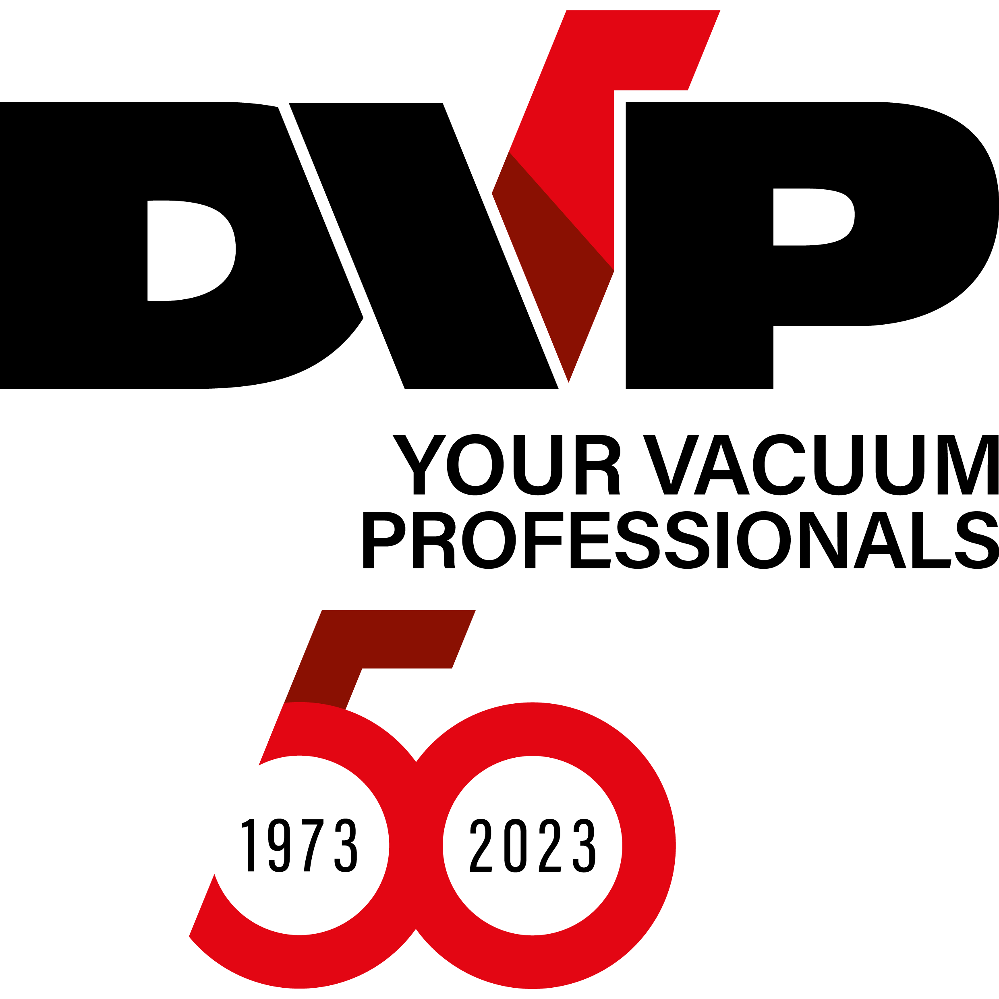
D.V.P. Vacuum Technology - Bachelor Thesis · R&D Engineer Bologna, Italy
- Experimental campaigns on flow rates and pressure losses in turbines and control valves.
- Built performance maps in GT-Suite and validated the model.
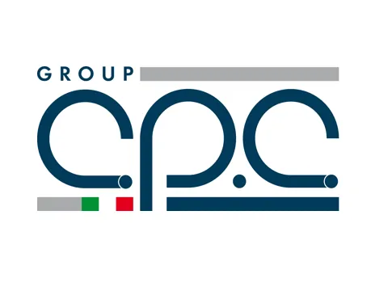
CPC Group - Composite Laminator Modena, Italy
- Lamination of CFRP moulds and a chassis for Formula SAE team.
Academic Projects
Composite stiffened panels
Buckling & damage tolerance checks, layup optimization (skin & stringers), deflection verification. UPM · Feb–May 2025
Composite laminate - Hashin (Abaqus)
UD laminate under tension vs compression; ply-by-ply failure using Hashin initiation; FEM-driven analysis. UPM · Jan–Mar 2025
Rear Fuselage - Section 19 (Skin & Stringers)
Skin laminate & stringer concept, drop-offs, reinforcements, frame joints (clips, Ø4.8 mm). UPM · Jan–Mar 2024
Handlebar Bracket - AW-2024 T3
Topology optimization, clamp & VDI 2230 bolted-joint checks, static/fatigue validation (Ansys), weight minimization. Unibo · Sep–Dec 2024
Composite drone structure
Lamination definition, thickness optimization, harmonic & impact FEM analyses. Unibo · Feb–Jun 2023
Composite stiffened panels
Objective - Design and validate CFRP panels with stringers, minimizing weight while meeting buckling and damage-tolerance requirements under the defined load cases.
What I did
- Defined layups for skin and stringers (symmetry, balance, ply percentages).
- Pre-sized reinforcements and verified local/global buckling and stringer crippling.
- Checked deflections and margins of safety (MS) vs requirements.
- Used buckling mode shapes to guide redesign iterations.
Tools
Hand Calculation; engineering spreadsheets for trade-offs; aerospace laminate rules.
Results
- Weight reduction: ≈ X–Y% (replace with your actual value).
- MS ≥ 0 for buckling and crippling on critical load cases.
- Deflections ≤ specified limit.
- Buckling & Crippling
- Optimized Layup
- FEM-Driven
- MS ≥ 0
Composite laminate - Hashin (Abaqus)
Objective - Simulate a UD laminate under tension and compression using Hashin damage initiation to identify ply-by-ply failure and compare tensile vs compressive capacity.
Model
- Coupon: 100 × 20 mm, 10 plies × 0.25 mm = 2.5 mm; symmetric layup [0°, ±45°, 0°, 90°]s.
- Elements: S4R shell mesh (~2 mm); material: UD lamina with elastic + Hashin inputs.
- BC/Load: bottom clamped; top edge coupled to a Reference Point with prescribed Y-displacement.
- Damage model: Hashin initiation (no damage evolution). Outputs: HSNFTCRT, HSNFCCRT, HSNMTCRT, HSNMCCRT.
Results
- Tension: 90° matrix-tension → ±45° matrix-shear → 0° fiber-tension; UTS ≈ 413 MPa.
- Compression: ±45° matrix-compression → 90° matrix-compression → 0° fiber-compression; UCS ≈ 336 MPa.
- Strength ratio: UTS/UCS ≈ 1.23 (≈23% stronger in tension).
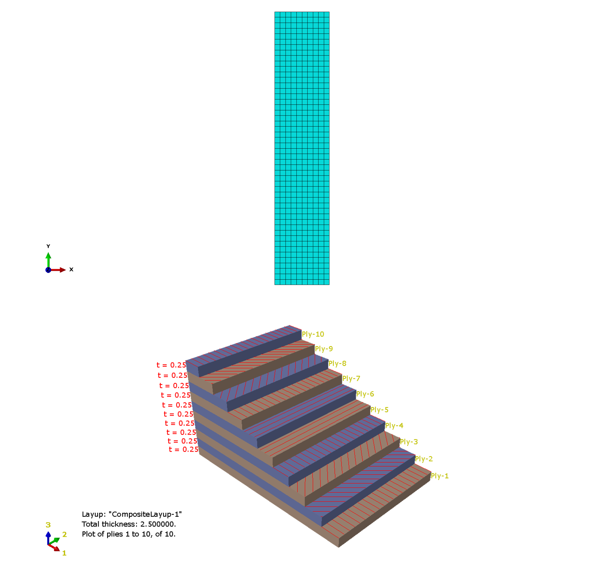
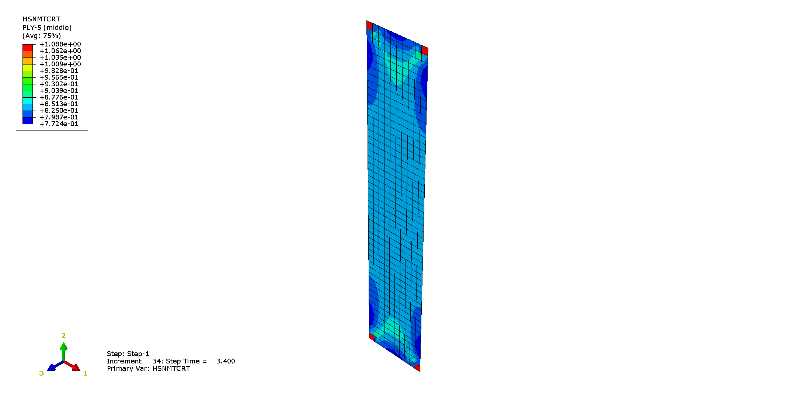
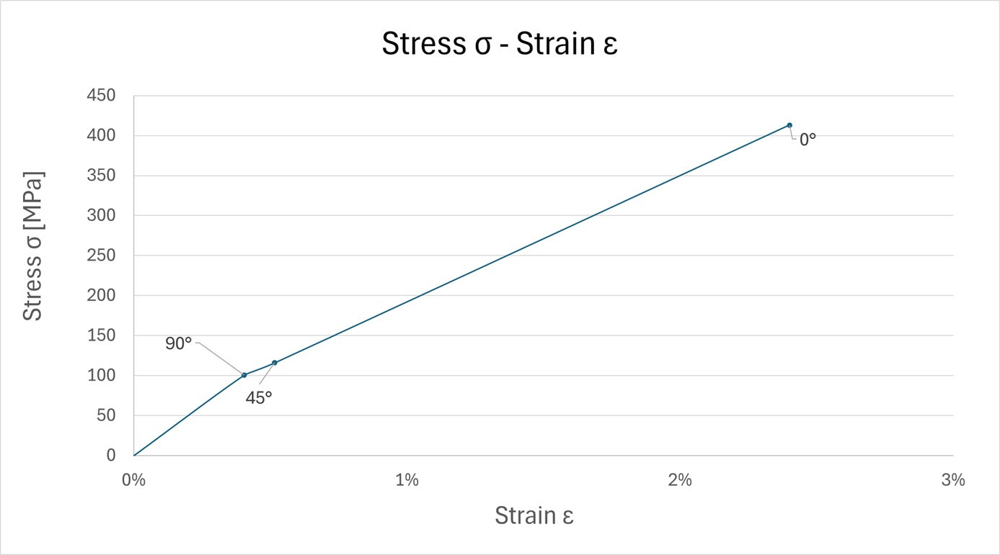
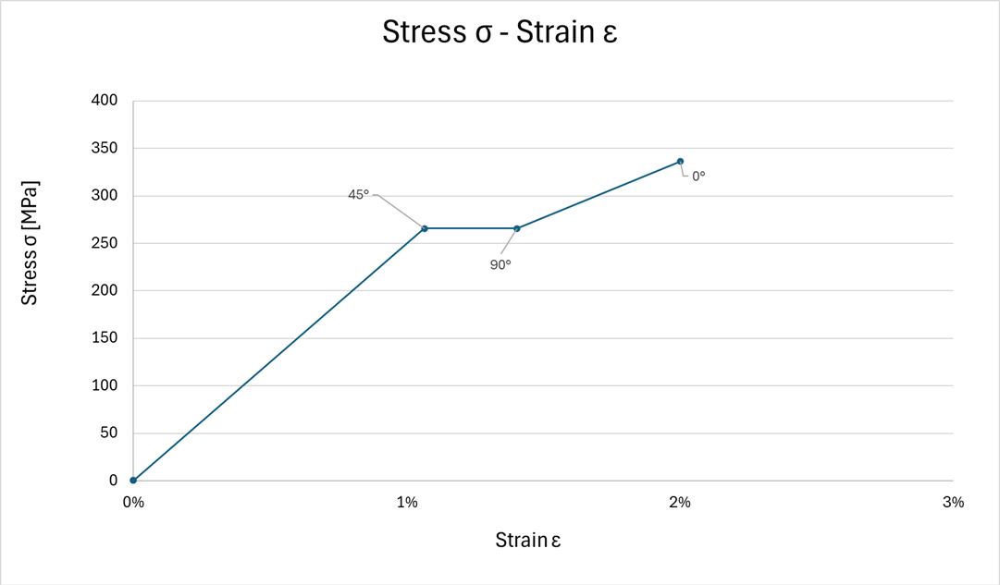
- Hashin initiation
- [0/±45/0/90]s
- UTS 413 MPa
- UCS 336 MPa
- Ratio ≈ 1.23
Rear Fuselage - Section 19 (Skin & Stringers)
Objective - Define composite skin and stringer concept, reinforcements, drop-offs, and frame joints (clips, Ø4.8 mm) for a fuselage bay between Frames A–B.
Given data
- Geometry: cylinder R = 4500 mm; frames 550 mm apart; stringer pitch 150 mm.
- Material: UD, CPT 0.184 mm.
- Skin: base 9 plies (2/4/3); reinforcement 14 plies (2/8/4), 100 × 70 mm patch.
- Stringers: h < 35 mm, R ≥ 3 mm; web 20 plies (50% 0° / 40% ±45° / 10% 90°); web = 2× flange.
- Joints: clips + Ø 4.8 mm fasteners.
What I did
- Built the master geometry (frames & stringers on skin), set pitch and feet widths.
- Mapped skin layups, drop-offs and reinforcement footprint.
- Sized stringer web/flanges and verified repairability (L1 for Ø4.8 mm).
- Defined clip joints and prepared drawings, materials list, and panel weight.
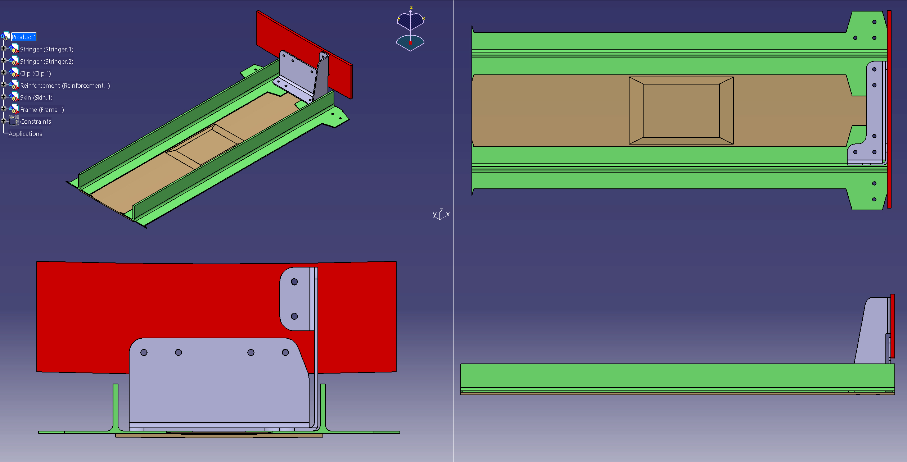
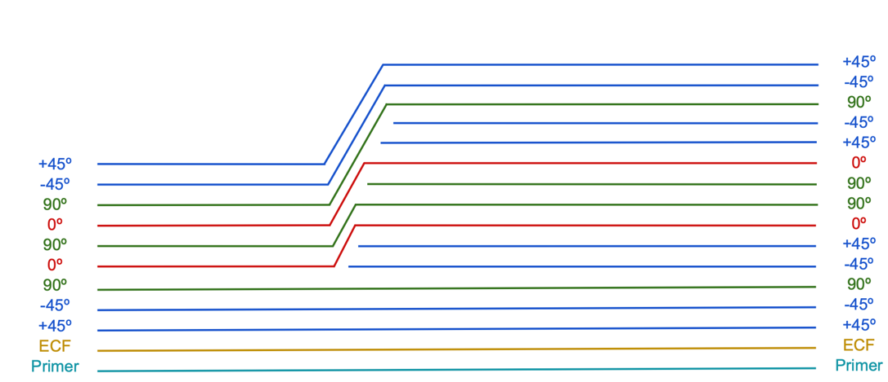
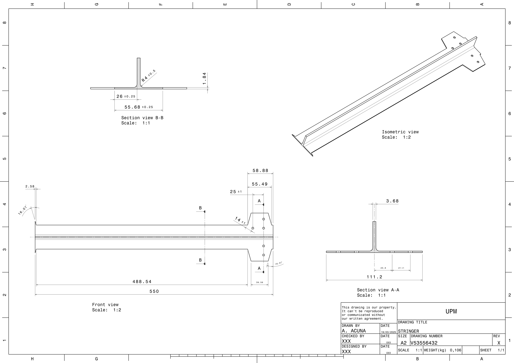
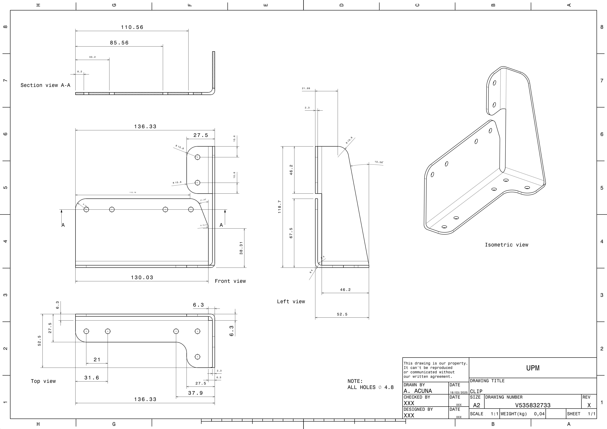
- R 4500 mm
- Pitch 150 mm
- UD CPT 0.184 mm
- Clips Ø 4.8 mm
Handlebar Bracket - AW-2024 T3
Objective - Design a lightweight handlebar bracket within the design envelope, compliant with steering/impact/vibration loads, manufacturable by AW-2024 T3.
Process
- Topology: compliance target with constraints on clamp stiffness and load paths → smoothed CAD rebuild.
- Bolts (VDI 2230): M6 for clamp; torque, preload & checks from FEA reactions.
- Validation (Ansys): static + fatigue (Goodman); handlebar–clamp contact and surface pressure checks.
Model
- Material (bracket): EN AW-2024 T3 — ρ=2.77×10−3 kg/mm³, E=73.1 GPa, ν=0.33, σy=345 MPa, σu=483 MPa.
- Loads: ultimate Fx=450 N, Fz=100 N; fatigue Fx=±350 N, Fz=50 N; life target 105 cycles.
- Contacts: threaded shaft–bracket bonded; under-head frictional (μ≈0.39); mesh conv. ~2.5 mm (local 2 mm).
Results
- Safety factors: ≥ 2 static, ≥ 1 fatigue.
- Clamp stiffness: within deflection/rotation limits; max deflection < 1 mm at ultimate load.
- Bolts: VDI 2230 checks OK (tightening, head pressure, stiffness, thread engagement).
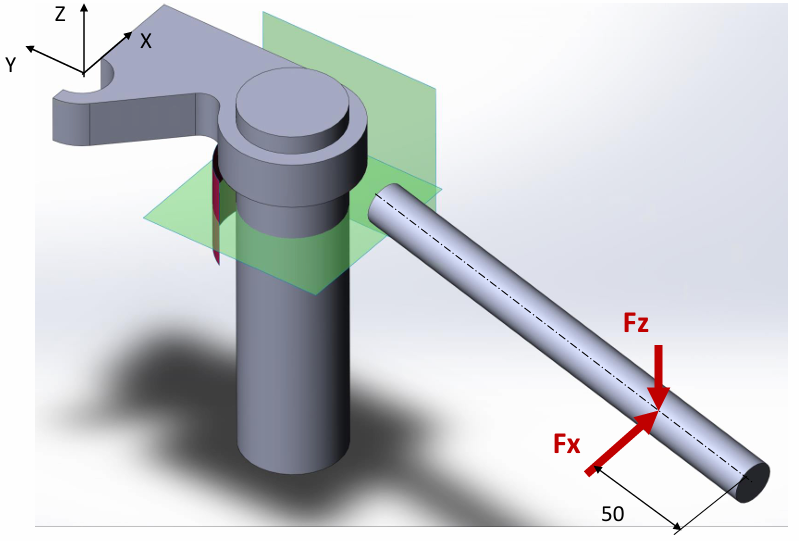
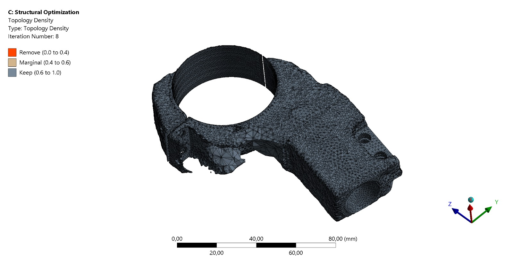
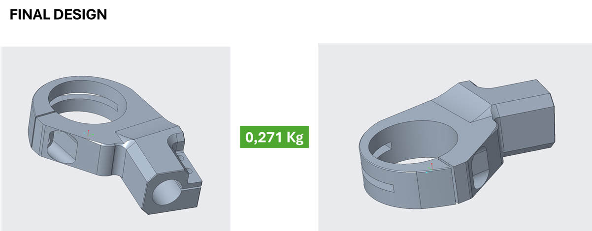
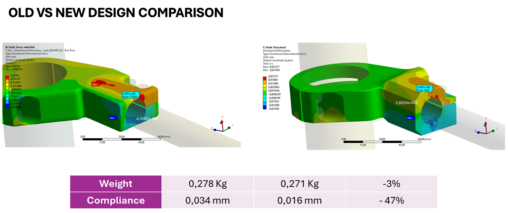
- AW-2024 T3
- Topology-Optimized
- VDI 2230 bolts
- Clamp OK
- Deflection < 1 mm
Composite drone structure
Objective - Define laminate schedule and thicknesses to minimize weight while maintaining stiffness and strength on a composite drone frame, with harmonic and impact checks on critical members.
What I did
- Selected laminate families for arms and central plate (ply angles, stacking rules, symmetry/balance).
- Ran thickness optimization under flight-load envelopes (hover, maneuver, landing).
- Built FEM and extracted harmonic response to avoid resonance near rotor frequencies.
- Performed impact scenarios on weak spots (arm-hub joints, landing edges).
Results
- Weight reduction vs baseline while keeping MS ≥ 0 in static checks.
- Minimum separation to rotor-induced frequencies achieved.
- Local reinforcements added only where needed after impact assessment.
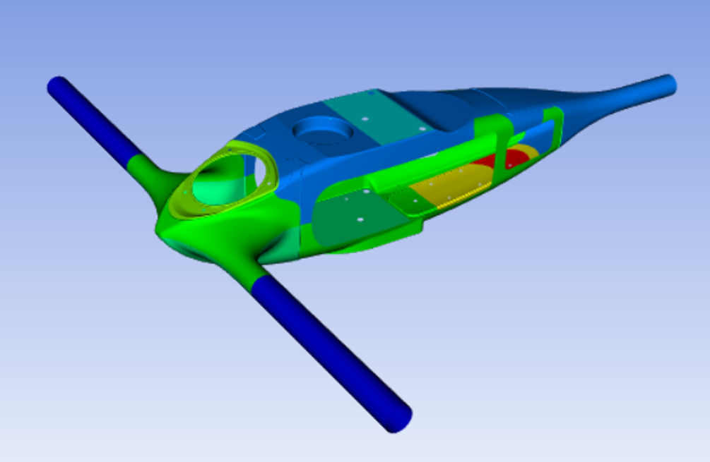
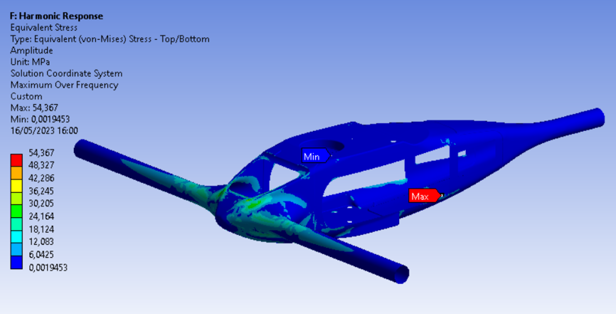
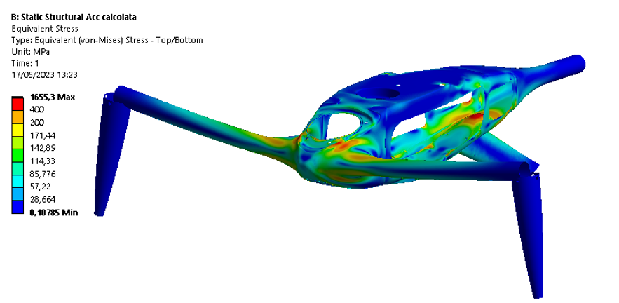
- Layup Optimization
- Harmonic Check
- Impact FEM
- MS ≥ 0
Education
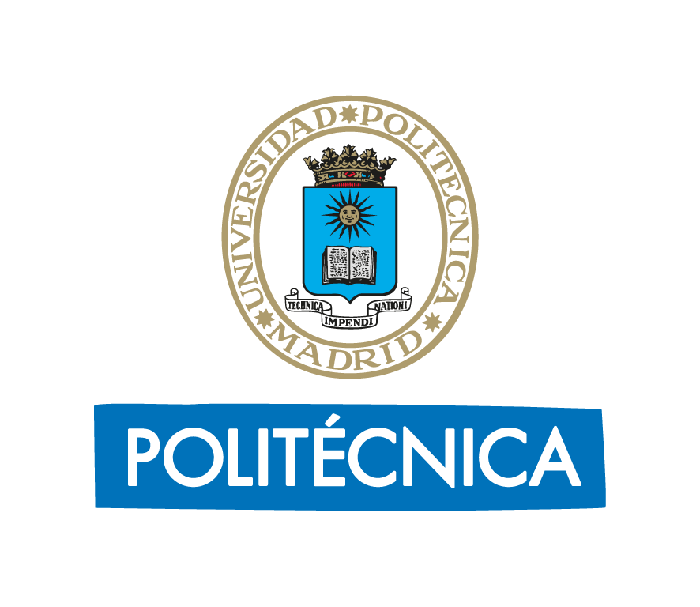
Master in Composite Materials Airbus Programme, Universidad Politécnica de Madrid
Erasmus – Aerospace Engineering University of Stuttgart

BSc and MSc in Mechanical Engineering University of Bologna
Skills
Software
Soft Skills
Languages
Contact
Interested in collaborating or need the CV in a different format? Get in touch.
- Monday - Friday: 09:00 - 19:00
- Saturday: 09:00 - 19:00
- Sunday: 09:00 - 12:00